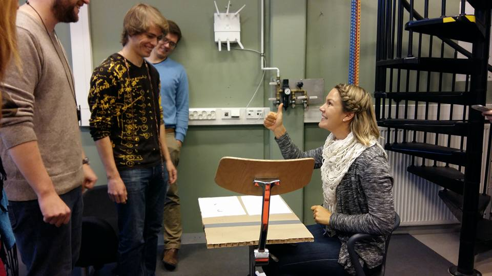

From Bullet Points to A Story
The modest, straight-to-the-point Finnish nature had a tight grip on me. I kept putting things as short as possible, as there was a constant voice in my head telling me to keep the focus and stop wasting other people’s time. In the cases this failed for some reason or was not possible because of the surroundings, I felt extremely uncomfortable. I used to call this a bullet point approach. You know when you have a draft on the paper with all the main topics but you haven’t made a proper narrative out of it yet. This way of thinking lasted for more than two decades and I still haven’t quite got over it. Partly because it worked surprisingly well: I was an efficient person who gets things done, I received compliments of my clear communication and was described as a good listener.
You have a draft on the paper with all the main topics but you haven’t made a proper narrative out of it yet
Not until during the last few years, I have started paying more attention to the downsides of relying on a bullet point type of communication. They are many: My colleagues and friends keep asking more details, they understand me wrong or are not convinced. My teachers tell me after the project that I would have got a better grade if I hadn’t hidden my achievements. What’s common in all these miscommunications is that we’re missing narratives.
Narratives form a basis for engaging communicationTake The Risk And Tell Something About Yourself
It’s nothing but natural for us human beings to continuously look for stories in communication. We’re not machines designed to read lines of code. It’s storytelling which is our thing. However, there is something very tricky in taking the role of the narrator. It’s not about us being unsocial. We love good conversations and socializing with other people. I thínk the hard part of creating a story is giving something personal out to the world.
When telling a story, you’re showing your personal experiences, feelings or opinions, and this way putting yourself into a vulnerable position. When it’s not about cold and distant hard facts anymore, other people's reactions and the feedback you receive gets personal on a totally different level. However, I’m convinced that it’s worth taking the risk because otherwise we’re throwing away our greatest potential - the diversity of the stories.
Stories Are Everywhere
It’s not just about feeling more comfortable in everyday situations, but storytelling skills are crucial for the professional life as well. Let’s take me as an example. The fields I’m working in and the things I’m passionate about are all strongly relying on storytelling. As a marketer in a startup company, I produce a lot of content varying from blog posts to case stories and flyers. I, host workshops, present the company’s products and give talks at international conferences. My job is all about engaging and convincing people through verbal, written and visual storytelling.
As a marketing team member, I'm continuosly creating stories (I on the left and my colleague on the right)My job is all about engaging and convincing people through verbal, written and visual storytelling
In product and service design, which is the main focus in my studies, I need to understand the user needs and the type of stories the users are a part of. I must be able to address the needs of those people and convince them of the unique value the products I design provides for them. Operating on this field without storytelling skills is like trying to program without a computer.
Understanding the user needs requires storytelling skills Using storytelling to demonstrate how the prototype works
Practise And You'll Get It Right
I got my first touch to storytelling techniques 1.5 years ago when I participated in a one-day storytelling workshop hosted by Bruce Oreck. The session turned out to be hard but extremely valuable experience which made me both very conscious of my lacking skills as a storyteller, as well as the importance of storytelling in all the areas of life. Noticing how significantly all the workshop attendees, including me, improved their storytelling skills during a single day, convinced me of the fact that storytelling is a skill that can be learned.
I have got many opportunities to practise my storytelling skills but it's still a long way to goSince the storytelling workshop, I started paying more attention on the way I communicate and present things. I’m happy to have got various opportunities for practising my storytelling skills through my studies and work. Regardless of that, I promise there will be many shy, awkward and embarrassing moments during the course. On the other hand, that’s the exact reason for why I’m in this course. I’m here to step out of my comfort zone and gain shining storytelling skills that help me to bring myself to the top as a marketer, product developer, teammate, friend and in many other areas.